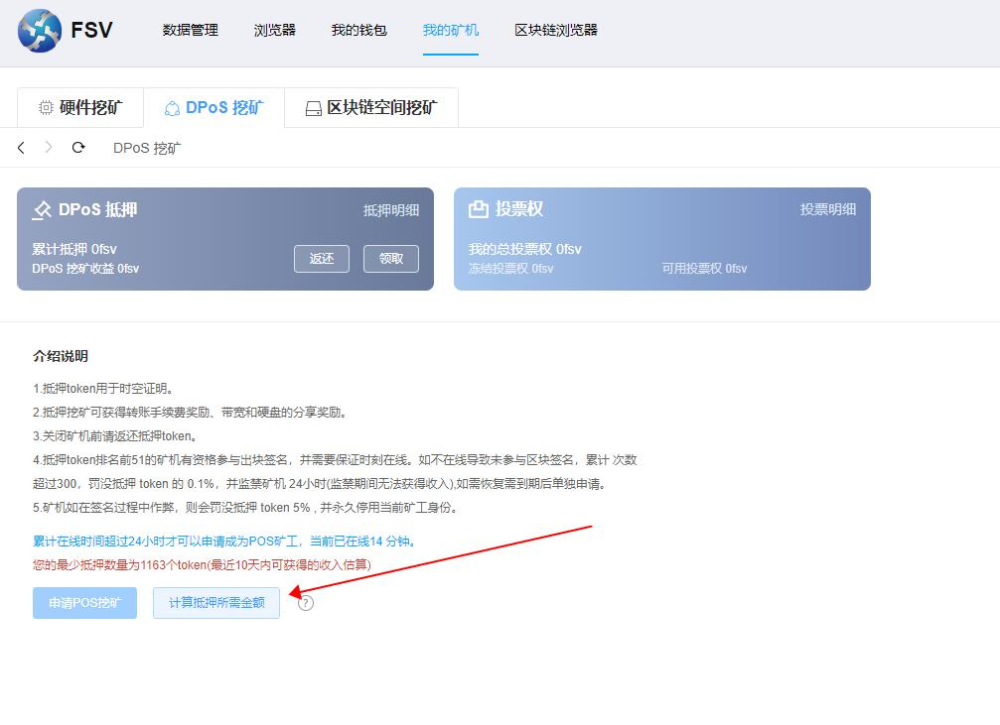

-
简体中文
新手帮助
- 1. How to create a wallet
-
Click "Assets" → "Create Wallet", select the wallet type, enter the creation
information, and create a wallet.
Steps to create a wallet
Set wallet name, wallet password, password prompt information
Follow the prompts to save the wallet mnemonic
Verify mnemonic words
Created successfully
Warm Reminder
The mnemonic phrase (private key) is the only way to recover the wallet. Once lost, the assets cannot be retrieved. Please keep it safe!
The mnemonic phrase should be backed up by physical media as much as possible, such as copying it on paper with a pen or using a fireproof, waterproof and anticorrosive "mnemonic secret box" Etc. It is forbidden to take screenshots or take pictures to prevent leakage.
- 2. How to import wallet
-
Click "Assets" → "Import Wallet", select the wallet type, and import the wallet.
Import wallet steps
Enter wallet backup
Set wallet password, password prompt information (optional)
Click "Start Import"
Warm Reminder
If an error occurs during the import process, please refer to the tutorial.
If the address is different after import, the imported mnemonic (private key) is wrong.
- 3. How to backup wallet
-
Click "Assets" → "Select Wallet" and select the wallet to enter the management page to
back up the wallet.
Steps to backup wallet
Click the "Backup Wallet" button
Correctly copy the mnemonic phrase or private key according to the prompts
Keep the mnemonic or private key in a safe place
Warm Reminder
The backup of the wallet is the only way to retrieve the assets, so it must be kept safe.
The mnemonic has the same function as the private key. It is recommended to back up the mnemonic.
It is recommended to use the mnemonic secret box to keep the mnemonic words
- 4. How to initiate a transfer
-
How to initiate a transfer
Open the asset wallet and select the currency to be transferred, click "Transfer", enter the transfer amount, the payment address, and complete the password verification. Yes.
How to initiate a collection
Open the wallet, click on the wallet address at the top, and send the wallet address to the other party.
Warm Reminder
If the other party uses the FSV wallet to transfer money to you, just show the receiving QR code to the other party.
- 1、如何创建钱包
-
点击「资产」→「创建钱包」，选择钱包类型，输入创建信息，创建钱包。
创建钱包步骤
设置钱包名称、钱包密码、密码提示信息
根据提示保存钱包助记词
验证助记词
创建成功
温馨提示
助记词（私钥）是恢复钱包的唯一方式，一旦丢失，资产将无法找回，请务必安全保管！
助记词尽可能采用物理介质备份，例如用笔抄在纸上或使用防火防水防腐蚀的「助记词密盒」 等，禁止截屏或者拍照，以防泄露。
- 2、如何导入钱包
-
点击「资产」→「导入钱包」，选择钱包类型，导入钱包。
导入钱包步骤
输入钱包备份
设置钱包密码、密码提示信息（可选）
点击「开始导入」
温馨提示
若导入过程中出现报错，请参考教程。
若导入后地址不同，说明导入的助记词（私钥）是错误的。
- 3、如何备份钱包
-
点击「资产」→「选择钱包」，选择钱包进入管理页面，即可备份钱包。
备份钱包步骤
点击「备份钱包」按钮
根据提示正确抄写助记词或者私钥
将助记词或者私钥保管在安全的地方
温馨提示
钱包的备份是找回资产的唯一途径，务必安全保管。
助记词与私钥作用相同，推荐备份助记词。
推荐使用助记词密盒保管助记词
- 4、如何发起转账
-
何发起转账
打开资产钱包选择要转账的币，点击「转账」，输入转账金额、收款地址，完成密码验证即 可。
如何发起收款
打开钱包，点击上方的钱包地址，将钱包地址发送给对方。
温馨提示
如果对方使用FSV钱包向你转账，向对方出示收款二维码即可。
DPoS 教程
- 1. Tutorial for building DPoS nodes on windows system
-
Computer configuration requirements
4 core 8G memory, more than 1000G free disk partition remaining space, export bandwidth more than 10m
Keep the external network tcp port 26656 open
Operating system requirements
Win10
Installation instructions
First, log in to the official website fs.video to download the windows installation package.
The installation directory needs to be selected. The partition with the largest remaining capacity is not recommended to be installed on the C drive. It is best to create a separate larger partition such as the D drive. This partition is only used to store the fsv installation.
Application for POS mining instructions
Enter my mining machine->DPoS mining
Click Calculate the required amount of mortgage, it will check whether the current online time is met, and display the current minimum mortgage amount.
When you are online for 24 hours, apply for POS mining button and you can click it normally.
After entering the application page, fill in the application materials and wait for the block confirmation after submission to be called a DPoS miner,
Note that DPoS miners will become official DPoS miners and participate in DPoS rewards when their cumulative mortgage amount is greater than 51. When they are less than 51, they will automatically become standby DPoS miners. At this time, they cannot participate in DPoS rewards and will not be punished offline.
- 2. Linux tutorial to build a DPoS node
-
Computer configuration requirements
4 core 8G memory, more than 1000G free disk partition remaining space, export bandwidth more than 10m
Keep the external network tcp port 26656 open
Operating system requirements
centos
Installation instructions
First, log in to the official website fs.video to download the linux node program compression package.
Unzip the installation package to a partition with a larger remaining capacity.
unzip fsv.zipEnter the directory
cd fsvIncrease execution permissions
chmod u+x op.sh fsv ipfs.exe db/bin/fsv-dbStart the program
./op.sh startStop the program
./op.sh stopView running log
tail -f fsv.logApply for POS mining
./fsv dpos create
Parameter list description:
--min-self-delegation float // DPoS manager's minimum self-delegation amount, nodes below this value will be imprisoned --name string // The name of the DPoS node DPoS Node Name --self-delegation float // The amount to be mortgaged by the DPoS manager --commission-max-change-rate float // The maximum rate that the commission ratio can be adjusted each time --commission-max-rate float // The upper limit of the maximum adjustable commission ratio --commission-rate float // commission rate --contact string // Contact information of the DPoS node --website string // Site information of the DPoS node
After that, you will be prompted to enter the mnemonic, and after confirmation, the confirmation parameter prompt will be printed. At this time, entering y will initiate a request to create a dpos node on the chain of the current dpos node.
POS lifted ban
./fsv dpos unjailAfter that, you will be prompted to enter the mnemonic phrase, and after confirmation, a request for on-chain unblocking of the current dpos node will be initiated.
Note:
1. The mnemonic must be the creator of the dpos node
2. Only support the lifting of the current dpos node
Check the running status
./fsv statusSync Info LatestBlockHeight: 115828 LatestBlockTime: 2021-10-30 01:05:27.615134076 +0000 UTC LatestAppHash: 2F453162DD17EA382FEA36E760EDCDCB4A3B57D2F57A8B2065F50FCD8AF30D7F LatestBlockHash: 90485EB1F671CB4F76984313F1D8E78857528550F200B89D392BA53907945FB9 LatestBlockHeight: 115828 EarliestBlockHeight: 1 EarliestBlockTime: 2021-10-21 16:10:29.9874294 +0000 UTC EarliestAppHash: E3B0C44298FC1C149AFBF4C8996FB92427AE41E4649B934CA495991B7852B855 EarliestBlockHash: 738BD289C495EFD1C448A88AEEE165437EE5F95C888AB60C84C47D3BAA07151B -------------------------------------------------- -------------------- Node Info ListenAddr: tcp://0.0.0.0:26656 Network: fsv20211021 NodeID: f6cbec7a89c95a73f4dadf0f9b0dced21439456d -------------------------------------------------- -------------------- Validator Info Address: D3F19BAF0186AB254BE9E6679DAA6B7992671267 VotingPower: 0 PubKey: jVjAsiR63boOfqc9Npk3w0E1IQNWs+PEQuwebe7UZR0= ConsAddress: fsvvalcons160cehtcps64j2jlfuenem2nt0xfxwyn8l5dqs8 -------------------------------------------------- -------------------- Sign Info Jailed Status: nothing Tombstoned: false Sign Start Height: 100 Signed blocks: 100 Unsigned blocks: 0
- 1、windows系统搭建 DPoS 节点的教程
-
电脑配置要求
4核8G内存,1000G以上可用磁盘分区剩余空间，出口带宽10m以上
保持外网tcp端口26656处于开放状态
操作系统要求
Win10
安装说明
首先登录官网 fs.video 下载windows安装包。
安装目录需要选择，剩余容量最大的分区，不建议安装到C盘，最好单独建立一个较大的分区如D盘，该分区下只用来存放fsv的安装。
申请POS挖矿说明
进入 我的矿机->DPoS挖矿
点击计算抵押所需金额，会检查当前是否满足在线时长，并显示当前的最少抵押数量。
当满足在线24小时后，申请POS挖矿按钮即可正常点击。

进入申请页面后，填写申请资料，提交后等待区块确认即可称为DPoS矿工，
注意DPoS矿工累计抵押金额全网排名大于51时，才会成为正式DPoS矿工，并参与DPoS奖励，小于51时自动变成备用DPoS矿工，此时不能参与DPoS奖励，也不会被离线惩罚。

- 2、Linux搭建 DPoS 节点的教程
-
电脑配置要求
4核8G内存，1000G以上可用磁盘分区剩余空间，出口带宽10m以上
保持外网tcp端口26656处于开放状态
操作系统要求
centos
安装说明
首先登录官网 fs.video 下载linux节点程序压缩包。
将安装包解压到剩余容量较大的分区。
unzip fsv.zip进入目录
cd fsv增加执行权限
chmod u+x op.sh fsv ipfs.exe db/bin/fsv.db启动程序
./op.sh start停止程序
./op.sh stop查看运行日志
tail -f fsv.log申请POS挖矿
./fsv dpos create
参数列表说明：
--min-self-delegation float // DPoS管理者最低自抵押金额,低于该值节点将被监禁 --name string // DPoS节点的名称 DPoS Node Name --self-delegation float // DPoS管理者要抵押的金额 --commission-max-change-rate float // 佣金比例每次可调整的最大幅度 --commission-max-rate float // 最大可调整的佣金比例上限 --commission-rate float // 佣金比例 --contact string // DPoS节点的联系人资料 --website string // DPoS节点的站点资料
之后会提示输入助记词,确认后会打印确认参数提示，此时输入y会发起对当前dpos节点的链上创建dpos节点请求。
POS 解禁
./fsv dpos unjail之后会提示输入助记词,确认后会发起对当前dpos节点的链上解禁请求。
注意：
1.助记词必须为dpos节点的创建者
2.只支持解禁当前dpos节点
查看运行状态
./fsv statusSync Info LatestBlockHeight: 115828 LatestBlockTime: 2021-10-30 01:05:27.615134076 +0000 UTC LatestAppHash: 2F453162DD17EA382FEA36E760EDCDCB4A3B57D2F57A8B2065F50FCD8AF30D7F LatestBlockHash: 90485EB1F671CB4F76984313F1D8E78857528550F200B89D392BA53907945FB9 LatestBlockHeight: 115828 EarliestBlockHeight: 1 EarliestBlockTime: 2021-10-21 16:10:29.9874294 +0000 UTC EarliestAppHash: E3B0C44298FC1C149AFBF4C8996FB92427AE41E4649B934CA495991B7852B855 EarliestBlockHash: 738BD289C495EFD1C448A88AEEE165437EE5F95C888AB60C84C47D3BAA07151B ---------------------------------------------------------------------- Node Info ListenAddr: tcp://0.0.0.0:26656 Network: fsv20211021 NodeID: f6cbec7a89c95a73f4dadf0f9b0dced21439456d ---------------------------------------------------------------------- Validator Info Address: D3F19BAF0186AB254BE9E6679DAA6B7992671267 VotingPower: 0 PubKey: jVjAsiR63boOfqc9Npk3w0E1IQNWs+PEQuwebe7UZR0= ConsAddress: fsvvalcons160cehtcps64j2jlfuenem2nt0xfxwyn8l5dqs8 ---------------------------------------------------------------------- Sign Info Jailed Status: nothing Tombstoned: false Sign Start Height: 100 Signed blocks: 100 Unsigned blocks: 0